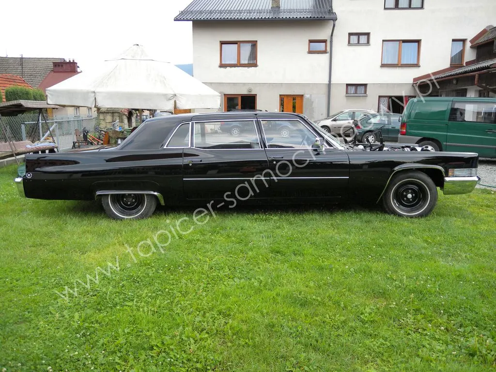

Cadillac – renowacja wnętrza limuzyny
Zabytkowa limuzyna Cadillac. Całe wnętrze części pasażerskiej odtworzone na podstawie oryginalnych próbek: kanapa z pikowanym oparciem, boczki drzwi i podsufitka w szarej skórze.
- Zakres prac
- Kanapa, boczki, podsufitka
- Materiał
- Szara skóra naturalna